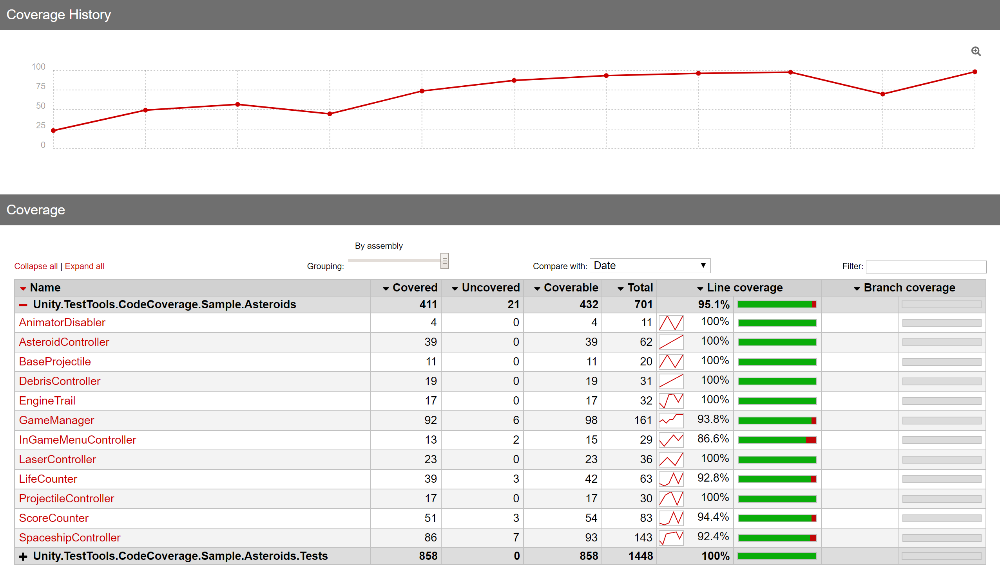
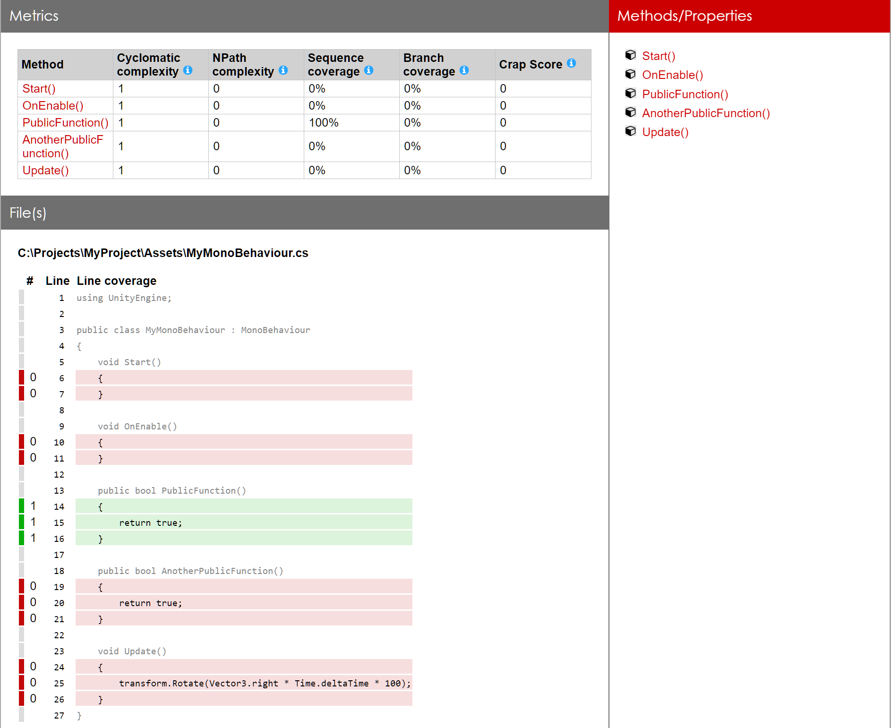

About Code Coverage¶
Code Coverage is a measure of how much of your code has been executed. It is normally associated with automated tests, but you can gather coverage data in Unity at any time when the Editor is running.
It is typically presented as a report that shows the percentage of the code that has been executed. For automated testing the report does not measure the quality of tests, only whether your code is executed by PlayMode and EditMode tests. It is especially useful to check that critical or high risk areas of your code are covered, because they should receive the most rigorous testing.
Code Coverage package¶
Use the Code Coverage package with the Test Runner to gather and present test coverage information. When you run your tests with code coverage enabled you can see exactly which lines of your code are executed when the tests run in addition to whether the tests passed or failed. See Using Code Coverage with Test Runner.
Once a test run has completed, the Code Coverage package will generate an HTML coverage report showing which lines of your code are covered by tests. Code Coverage currently supports PlayMode and EditMode tests. It also allows you to track the code coverage changes through time.
Additionally, the Code Coverage package offers a Coverage Recording feature which allows capturing coverage data on demand, in case you do not have tests in your project or doing manual testing.
The Quickstart guide will give you an insight into the package.
Coverage HTML report¶
Shown below is an example of the top level page of an HTML report generated by the package.

Class view¶
This view shows some brief statistics for the selected class as well as the C# source code. Each line will be colored either green or red depending on whether the line was covered or not.

For more information see How to interpret the results.
Other reports¶
The package can produce SonarQube, Cobertura and LCOV reports.
Coverage summary badges¶
Additionally, the package can produce simple badges in SVG and PNG format, showing the current percentage of code that is covered.